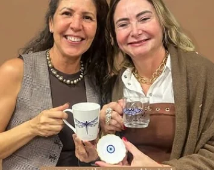
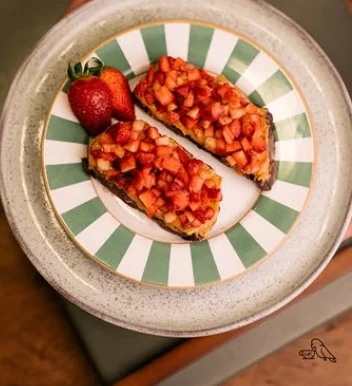
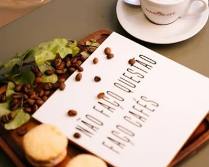
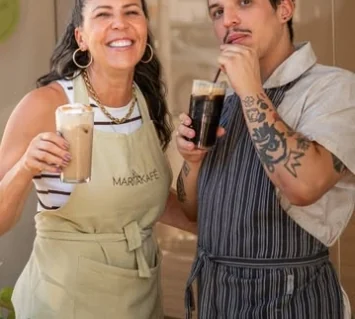
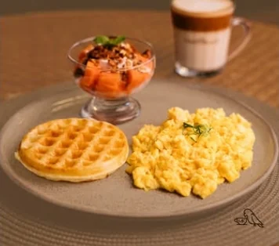

Oficina de bandtape
Segunda edição
Detalhes e inscrição no post fixado do Instagram.
Ver no Instagram

Rua Hélio Tomba, 100, Itu
Cafeteria com comida afetiva, gostosa e saudável. Combo Arara, waffle, ovos mexidos, café e oficinas de vez em quando.

É ela que aparece no logotipo, em cima do K de MaritaKafé, e assina num cantinho as fotos dos pratos.
Na Rua Hélio Tomba, a casa serve waffle, ovos mexidos, frutas, café e o pão de queijo que virou a marca do lugar. Entre um café e outro, abre espaço para oficinas e eventos.
A história do nome está no post “Por que Maritakafé?”O pão de queijo que a casa diz ser o único de Itu.

Waffle, ovos mexidos, taça de frutas e café com leite.A confirmar
Pão tostado coberto de morango picado.A confirmar
O cardápio completo fica no destaque “Cardápio” do perfil.
A casa recebe oficinas e reserva espaço para comemorações. Para o seu evento, a reserva é pelo WhatsApp.
Reservar para o meu evento
Segunda edição
Detalhes e inscrição no post fixado do Instagram.
Ver no InstagramAs próximas datas saem primeiro no Instagram.
O costume vem de Nápoles: quem pode paga um café a mais, e ele fica “suspenso” para alguém que chegar depois.
A MaritaKafé adotou a ideia. Pergunte no balcão como deixar o seu.A confirmar
Dá. A reserva é feita pelo WhatsApp. Chamar no WhatsApp
Os horários estão no destaque “Horario” do Instagram.
É pão de queijo assado na máquina de waffle, feito com queijo canastra.A confirmar
A proposta da casa é comida afetiva, gostosa e saudável. Pergunte pelas opções do dia.
Resposta a combinar com a casa.A confirmar
Resposta a combinar com a casa.A confirmar
WhatsApp (11) 94525-7494
Os horários atualizados ficam no destaque “Horario” do Instagram.
O mapa é carregado do Google Maps só quando você pedir.
Abrir no Google MapsVersão de demonstração. Itens marcados com “A confirmar” ainda serão validados com a MaritaKafé.